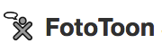
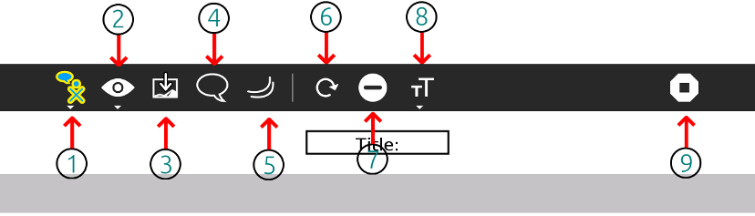
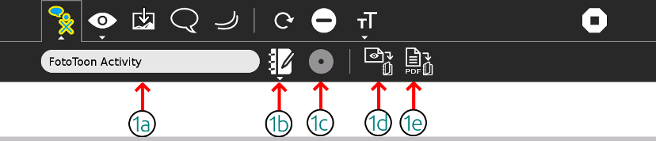
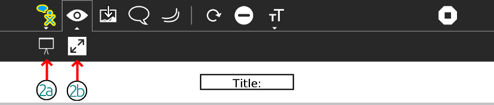
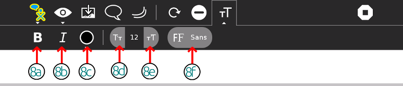
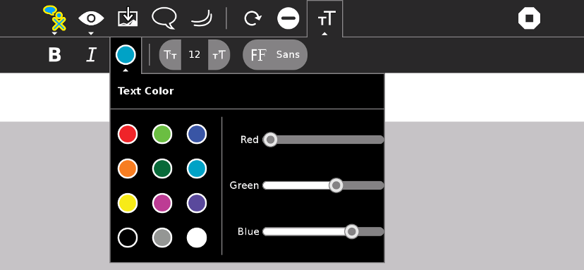
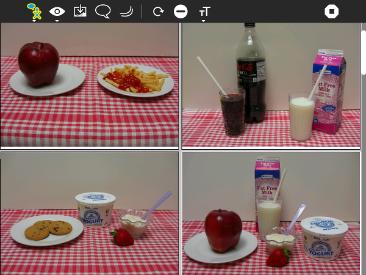
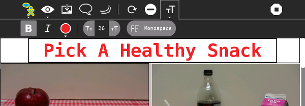
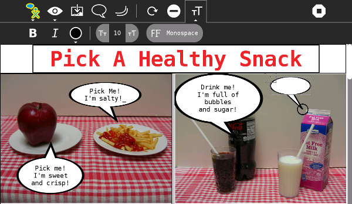
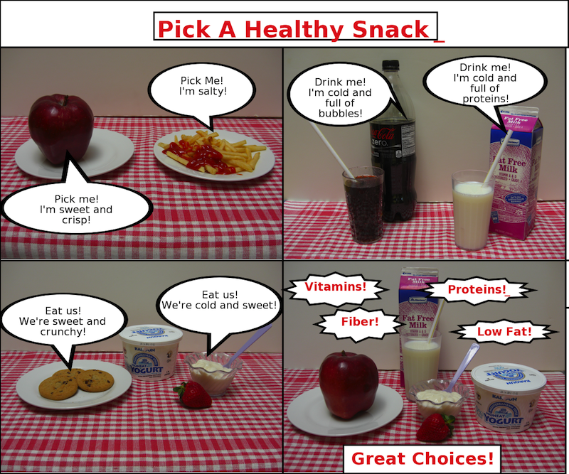

FotoToon¶

About¶
The FotoToon Activity will allow you to create everything from a simple “comic” strip to a long elaborate illustrated document. You will be able to import many kinds of images into the panes of your project and add text bubbles to help tell the story. You can use photo images taken with the XO or imported from a camera, drawings made with Activities such as Paint, and images of all kinds downloaded from the web. This could include photos, charts and graphs, maps, and the like.
This introduction to FotoToon will show you how to get started with a simple 4 panel project.
FotoToon, like many other Sugar Activities, is often updated to fix “bugs” that users report. There was one update, from version 15 to version 16 during the time this instruction chapter was written. By the time you use it, there may be others. The changes are usually minor and should not interfere with the usefulness of this information. Always try to be sure you are using the latest version.
Using FotoToon¶
The Main FotoToon Toolbar¶

The FotoToon Toolbar has 9 icons including 3 with pulldown menus. The main FotoToon toolbar allows you to access many features of the Activity. Here is a description of what each of the icons will allow you to do:
The FotoToon icon. When you hover your cursor over this icon you will open a small pulldown that allows you to export your work as an image or a book (pdf file). See below for more details.
This icon allows you to view the content in full screen or presentation mode.
The Add Photo icon. This icon allows you to add an image to your project. It can be a photo you take with the XO or digital camera, or import from the web. It can also be a picture, page, or project you create in another Sugar Activity.
The Add a globe icon. This allows you to add a globe. It is used to tell what the characters of your image is speaking. This also include some other icons such as whispher and think.
The Choose a movement line icon. This can be used to insert some other icons such as highlight and idea to the image.
The Rotate icon. This allows you to rotate the selected object in the clockwise direction in 90 degrees for each click.
The Delete icon. This allows you to delete the selected object.
This icon allows you to change the text properties of what you have typed. See below for more details.
The familiar stop-sign icon is one way to stop the FotoToon Activity. You can also use the keyboard shortcut: ctrl-Q.
Title: box allows you to give a name to your project. Click on it and replace the content with the name you wish for your work.
The Export Pulldown¶

1a- This little panel allows you to name your project before you export it as an image. If you do nothing, it will appear in the Journal as, “FotoToon as image.” If you give it a name, such as “My Project-1” before exporting it will appear in the Journal as “My Project-1 as image”. This will make it easier to find later in the Journal. Just erase the FotoToon label and replace it with the title you want to use. If you forget to name it when saving, you can always go to the Journal and select and rename it.
1b- This allows you to add a description to the journal entry.
1c- This greyed out icon for home view is currently inactive.
1d- Click on this icon to export your project as an image. The export will just show your project. The tool bars and other things on the screen will not be included. If you wish a screen shot of the entire screen, you can make one by using the usual alt-1 (press the alt key and the 1 key at the same time).
1e- Click this icon to export your project as an book. The export will just show your project. The tool bars and other things on the screen will not be included. The book will be saved in PDF format. It can be viewed from Read Activity.
The View Pulldown¶

2a- Click this to view your project in slideshow mode. It will allow you to view your project slide by slide. In the slideshow, click on the arrows by the sides to navigate forward and backword in your slides. Click on the slidshow icon again to return to edit mode.
2b - Click this to work in full screen. This will hide the toolbar and thus you will have more space for your design. Once you are in the full screen mode, the same icon will appear on the top right corner of the window. Click that icon to return to the normal edit mode.
The Text Pulldown¶

The Text Pulldown menu allows you to control the appearance of the text you add to your project. Generally, they apply to everything in the box or bubble you are currently working on. You do not have to highlight the text to change it.
8a- Selecting this icon will change the text you are working on to Bold. Clicking it again reverts back to regular text,
8b- Selecting this icon will change the text your are working on to Italics.
Note: clicking on both of these icons, in any order, will give you Bold Italic text. Clicking both again, in any order, will get you back to regular text.
8c- Clicking on this icon will open the Text Color Palette. See below for information on how to use it.
8d- Clicking this will reduce the size of the text. The current size will be displayed just next to this icon.
8e - Clicking this will increase the size of the text. The current size will be displayed just before the icon.
8f- This pull down offers a choice of different fonts, listed in alphabetical order. Some, such as “Ding Bats” don’t actually produce anything. Be sure to test the font on your text to see if it looks the way you would like it to.
The Color Palette Pulldown¶

The Color Palette Pulldown allows you to choose the color of your font. It will apply to everything in the box or bubble but can vary from one box or bubble to the next as you choose. There are 12 preset colors you can use, or you can create a custom color by selecting one of the preset colors and dragging the sliders to give more or less Red, Green, or Blue in the selected color. The little circle at the top of the Color Palette shows the current color. When you are satisfied with the color you have selected/modified, click on the little circle to accept the chosen color and close the Color Palette. It may take a few seconds for the new color to appear in the text box. But, don’t worry, it will!
Learning with FotoToon¶
Plan Ahead¶
FotoToon can be used for a wide variety of learning activities, but the general process is always similar. For the sample project in this section, we will make a 4 panel page using 4 photos. This is a good way to get started since the page can be printed on a single page.
Here are the general steps you need to complete before you build your first FotoToon project:
Step One: Decide what your project will be about. You can tell a story about anything. For example, it could be about your pets, your home, your family, your town, or, even some photos you took at a party. Any topic is fine for our first project. The sample project will be about “Healthy Snacks” and the photos will be pictures of food.
Step Two: Make a plan. Before you begin you should make a plan that will guide you through the construction of your project. Some people like to draw a little sketch of each pane showing what will be in the picture and a suggestion for what words will be added. If you like the panes can each be on a separate small piece of paper so you can re-arrange them easily This is called a Story Board. You may have another way you would like to make your plan, just be sure to include information about what pictures you will use, where you will get them, and what text you plan to add.
Step Three: Gather your images. For starters, we will use images that were taken either with a camera, or using the Record Activity on the XO. Any image that can be imported to the Journal on your XO and viewed in Image Viewer can be used. It is a good idea to rename each of the photos you will be using in the Journal. The name can include the number of the pane you plan to use it in so it is easy to find when you begin putting things together.
Place Your Images¶
Open the Journal and check to be sure your images are there and can be viewed in the Image Viewer (click on the file to open it and check). Be sure the images have names that include the number of the pane you plan to place them (1,2,3, or 4).
Open FotoToon and find the “Add Photo” icon (number 3 in the FotoToon main toolbar shown above). A list of available images will appear. Click on the one you want to put in the first pane. When it has loaded, you can either leave it or remove it with the minus sign icon (number 7 in the main toolbar shown above). Warning: You can only remove the last image entered. That is why it is important to number the images according to the panes you wish to place them in. After the first image has been placed, continue adding images until all four for your first project have been placed. If you decide later that you want to change their order after they have been placed, you will need to delete them and replace them in the new order. It is best to get your final placement before adding any text.

If you would like to use the same images that will be used in this sample project, you will find them at these links. Go to each link, upload the photo to a usb drive, plug it into your XO, and open by clicking on the image names. They will open in the Image Viewer and be automatically saved so you can access them for your project.


Add Dialog and Titles¶
If you have planned well with your storyboard, you will have a pretty good idea of what you want to put in your dialog balloons and text boxes. You may even have a title in mind for your project. You can actually start this process anywhere in your project. All of the balloons and boxes you will be using to do this will be identified in the first image above, the The Main PhotoToonToolbar.
Making and placing your Title: If you know what you would like your title to be, you can start with that. It can always be changed later. When you start a project in FotoToon there will already be a tiny box for the title in a narrow band across the top of the project window. You can drag the upper left corner of the box to enlarge it (look for the cursor arrow to change to a thinner double headed arrow). You can also move it around in the band across the top. Click on the box and type all or part of your title. Then you can change the type style and size using the pull downs in the Text Pulldown menu (see 8d and 8e) in the picture above). Experiment until you find a style and size you like. You can also change the color of the type. Don’t worry if it isn’t perfect, you can always come back later and change it. Notice that you can erase part of the text by backspacing over it.

In this image you can see that we selected bold, a red color from the color palette, a type size of 26, and the Font “Monospace”.
Adding Text Balloons: You can place the text balloons wherever you like within a pane. Click on the pane, then on the balloon you want to use (see “Add a global menu” and “Choose a movement line menu” above for explanations). The balloon will appear in the pane. You can drag it to the position where you want it, and also can drag the little tail to point to the source of the dialog. Add the words to the balloon in the same way you added them to the Title box.

In this image you can see that we have added 4 dialog balloons (#4 in the main toolbar). We could also have used the “think” balloon, or the “whisper” balloon. The first pane is OK, but the first balloon in the second pane needs to be dragged to a better shape and size. The second balloon in the second pane appears just as it does when it is first added. It still needs to have text added and to be resized (by dragging a corner). You can see that our type size is 10, text color is black, and we are still using the “Monospace” font.
As you work with the various text items, you may wish to eliminate one entirely. Just click on it, then on the icon with the minus (-) sign (#7 in the main toolbar), and it will disappear.
Adding Exclamation Balloons: You may wish to include special exclamations to your project. Choose the exclamation balloon (choose from # 4 in the main toolbar). It is possible to eliminate the one longer point on the balloon by dragging it so that it matched the others. Again, type into the balloon just as you did in the title box and dialog balloons.
Adding extra Text Boxes: You can add a text box anywhere in any pane by clicking on the pane and then on the box icon in the diagram (choose from #4 in the main toolbar).

In this example you can see we have added 4 exclamation balloons and one extra text box. We used the same text size, font, and color as in the rest of the project. You could choose to use different ones in your project.
Exporting Your Project¶
Now, if you have followed the instructions above, you should have a small, completed FotoToon Project. You may have decided to use the same photos that are in the sample, or you may have chosen to use images you have imported. These can be from your camera, your XO, downloads from the web, projects you have made in other Activities, drawings you made in Paint, or even photos you have modified in Paint (import, then add things and/or crop as you like). When finished, your project will look something like this:

Regardless of what you have made for your project, you will probably want to share it with others. You can do this as an email attachment or print it out as a paper copy. To do this, you need to export your project as an image stored in your Journal. The instructions for exporting your project are shown above. We will repeat them here as well.
The Export Pulldown¶
1a- This little panel allows you to name your project before you export it as an image. If you do nothing, it will appear in the Journal as, “FotoToon as image.” If you give it a name, such as “My Project-1” before exporting it will appear in the Journal as “My Project-1 as image”. This will make it easier to find later in the Journal. Just erase the FotoToon label and replace it with the title you want to use. If you forget to name it when saving, you can always go to the Journal and select and rename it.
1b- This allows you to add a description to jounal entry.
1c- This greyed out icon for home view is currently inactive.
1d- Click on this icon to export your project as an image. The export will just show your project. The tool bars and other things on the screen will not be included. If you wish a screen shot of the entire screen, you can make one by using the usual alt-1 (press the alt key and the 1 key at the same time).
1e- Click this icon to export your project as an book. The export will just show your project. The tool bars and other things on the screen will not be included. The book will be saved in PDF format. It can be viewed from Read Activity.
Look in the Journal. Your project should appear there with the name you gave it before exporting. If you forgot to give it a name, it will just say “FotoToon.” If this happened, rename it now, in the Journal before you forget to do it.
Extending FotoToon¶
FotoToon can be used for much more than the simple 4-pane example we built in the instructions. It can be adapted for use in many different subject areas where students and teachers can construct lessons on any topic. Here are some possible ideas for projects:
Student written comic books for language arts practice. Students can write their own little “graphic novels” and even print them and take home to share with friends and family.
Student produced magazine articles for any topic they and their teachers choose. A single page or two-page “spread” will make it like the ones you see in actual magazines. One or more panes on the page can be used just for text to extend the story. The text could be written in another program and imported as an image or put in a large text box that fills the pane. The advantage of doing it all in FotoToon is that it would be easier to edit and/or change the text there than if it is imported as an image. Some possible ideas for these articles could be:
Cooking favorite foods (with recipes)
Family pets (pictures and stories)
Our neighborhood (pictures and stories of places to see or problems that need to be solved)
Science articles with photos of plants, animals, rocks, etc. including descriptions and information
Historical articles with photos of people or places imported from the web
“How To” articles on any topic the students or teacher choose
Modifying FotoToon¶
FotoToon is free open source software and, as such is available to be modified by the user as they wish as long as they give the original source proper credit. So, if you are a programmer and want to change something to suit your needs, you may do so. Just don’t forget to give credit where credit is due.
If you are not a programmer, you can suggest changes or modifications to the Activity to the original programmer at the same place where you would report problems. If it is something that will improve the Activity and not interfere with other parts of it, the programmers will be happy to consider including it in a future update.
Because there are always updates and improvements happening with this program, be sure to always check to be sure you have the latest version.